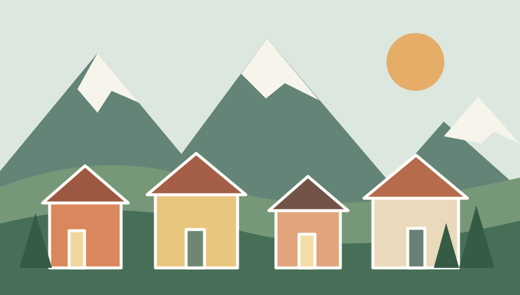

Un loc de descoperit
Brașov, între munți
La poalele Tâmpei, străzile vechi și acoperișurile roșii spun povești care se întâlnesc cu aerul curat al Carpaților. Un oraș primitor, cu pași de făcut pe îndelete.
„Frumusețea stă în detaliile pe care alegi să le observi.”

Ce merită văzut
- Piața Sfatului și clădirile sale colorate
- Biserica Neagră, un reper al orașului
- Aleea de sub Tâmpa, pentru o plimbare liniștită
- Strada Sforii, una dintre cele mai înguste străzi
Un traseu de o zi
- Începe dimineața cu o cafea în centrul vechi.
- Vizitează Piața Sfatului și Biserica Neagră.
- Urcă spre Tâmpa pentru priveliștea orașului.
- Încheie ziua cu o plimbare pe străduțele istorice.
O ilustrație locală
Imaginea de mai jos este salvată în proiect și se încarcă folosind o cale locală.

Program de explorare
Un exemplu de program, cu fiecare rând evidențiat printr-o culoare diferită.
| Momentul zilei | Activitate | Loc |
|---|---|---|
| 09:00 | Mic dejun și cafea | Piața Sfatului |
| 10:30 | Tur pietonal al centrului | Centrul vechi |
| 13:00 | Prânz cu preparate locale | Strada Republicii |
| 15:00 | Plimbare și panoramă | Muntele Tâmpa |
| Recomandare pentru seară | Apus în centrul vechi | |
Ultimul rând îmbină două celule pe orizontală folosind atributul colspan.